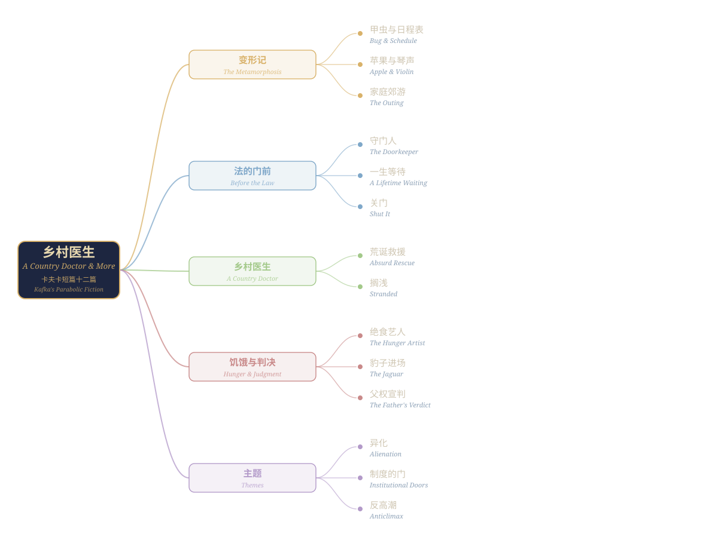

乡村医生
〇 · 书籍信息
基本信息
| 书名 | 《乡村医生》（Ein Landarzt）——本册以同名短篇集为骨干，另收《判决》《变形记》《在法的门前》《饥饿艺术家》等，是理解卡夫卡的最小完备集 |
|---|---|
| 作者 | 弗兰茨·卡夫卡（1883–1924），布拉格德语作家，保险公司职员。生前只出版过少量短篇，嘱友焚稿——布罗德抗命整理，才有今天的卡夫卡 |
| 出版 | 《判决》1913 年一夜写成；《变形记》1915 年发表；《在法的门前》原是《审判》第九章的抽出篇——本册各篇互为注释 |
| 体裁 | 寓言体短篇（parabolic fiction）。「卡夫卡式」（Kafkaesque）一词由此而来：规则清晰、结论荒谬、个体无声 |
| 一句话 | 格里高尔一夜之间变成甲虫，家人从震惊到嫌弃到庆幸——没有人问过一句「为什么」；卡夫卡的世界里，荒谬从不解释自己，只有人被要求继续履行职责。 |
一 · 核心主题总览
十二篇shared同一个骨架，四组概念：① 变形与职责（变形记）
格里高尔变成甲虫，第一个念头是「上班要迟到了」。灾难之后没有解释、没有救援，只有职场义务与家庭义务的双重复核——卡夫卡把「人的异化」写成一次缺席的奇迹：奇迹发生了，日程表没有变。
② 门与法（在法的门前）
乡下人一生守在专为它开的门前，至死不得入——门卒最后一句「这扇门本来就只为你开，我这就关上它」。规则的存在似乎只为生产等待：制度的恐怖不在于拒绝你，而在于让你把等待当成本分。
③ 判断与父权（判决）
《判决》一夜写成：父亲一句话就把儿子「判处溺亡」，儿子竟然执行了。权力的最终形态不是暴力而是「内化的判决」——被判决者替判决者完成判决。
④ 饥饿与表演（饥饿艺术家）
绝食艺人把「饿」练成艺术，市场凉了就转行到马戏团，最后承认：他饿只因找不到想吃的东西。把痛苦做成职业的人，最难承认的是「我其实只是想要别的」。
二 · 第一段 变形记—— 甲虫 · 房间 · 琴声 ——
变形 · 上：灾难与日程表
格里高尔·萨姆沙清晨醒来，发现自己躺在床上变成了一只巨大的甲虫。全书最著名的开场只有一句话，且语法平常得像天气预报。他挣扎着担心的是赶不上五点的火车、推销员的差事、还父母欠老板的债；公司协理亲自上门催工。父亲用报纸与手杖把他赶回房间——从此他的世界只剩一间房：床、沙发、窗。甲虫译名之争持续至今：德语 Ungeziefer 是「害虫/不洁之物」，不是任何具体昆虫。
◆ 语言学习 · 变形 · 上
| vermin /ˈvɜːmɪn/ | n. 害虫（集合）—— 例句：a monstrous vermin（开篇，英译常用词）。单复同形；verminous 形容词 |
|---|---|
| duty /ˈdjuːti/ | n. 职责，义务 —— 例句：It's his duty（职贵段）。卡夫卡高频词：duty call / on duty / off duty |
| startle /ˈstɑːtl/ | v. 惊吓 —— 例句：startled voices（家人反应段）。startle sb into doing；与 frighten 辨析：startle 偏突发 |
| apothecary /əˈpɒθɪkəri/ | n. 药剂师 —— 例句：the apothecary（请医段）。英美差异：chemist（英）/ pharmacist（美） |
句型 ｜ 「When Gregor Samsa woke up one morning from unsettling dreams, he found himself changed in his bed into a monstrous vermin.」——when 从句交代情境，主干只有 found himself changed 五个词。「醒来发现」句式是奇幻开场的零成本入口：情境平常，变化荒谬，语调平静——三者落差就是卡夫卡式的张力。
变形 · 下：苹果与琴声
变形后的漫长居家：妹妹起初喂食照料，父亲的一次苹果砸进他背部腐烂；家里经济重构——父亲银行差事、母亲缝纫、妹妹售货，灾难把每个人变成劳动力，只把格里高尔变成负担。妹妹拉小提琴的夜晚，他爬出房间想要「送她进音乐学院」的旧梦——被房客嘲弄、被家人驱逐，当晚死去。结尾一家的郊游，父母忽然发现女儿「已长成一个身材丰满的美丽少女」——家庭把死讯过成了春天。
◆ 语言学习 · 变形 · 下
| lodger /ˈlɒdʒə/ | n. 房客 —— 例句：the three lodgers（房客段）。英式词；美式 boarder/tenant；take in lodgers 招房客 |
|---|---|
| rot /rɒt/ | v./n. 腐烂 —— 例句：the apple rotted in his back（苹果段）。rot away / rot off；与 decay 辨析：rot 更具体更恶心 |
| violinist /ˌvaɪəˈlɪnɪst/ | n. 小提琴手 —— 例句：his sister the violinist（琴声段）。-ist 后缀职业族：pianist/violinist/cellist |
| spare /speə/ | adj. 细瘦的；多余的 —— 例句：his spare body（结尾少女段反衬）。spare room 空房 / spare parts 备件——「多余」的词根与「节俭」共享 |
习语 ｜ It was no dream.——变形后不久的独立短句。英文叙述里用「否定梦境」来确认现实，简洁有力；今天写作仍可用：灾难的确认，不需要感叹号，需要一个 no。
三 · 第二段 法的门前—— 医生 · 门 · 守门人 ——
乡村医生
暴风雪夜，医生应召出诊，马却死了——马厩里竟「莫名其妙」钻出两匹健马与马夫；医生被拽上马车瞬间抵达病人家。病人伤口里的蛆虫与家属的期待构成梦魇般的场景：医生被困在患者与荒诞之间，「我是个不幸的时代里不幸的医生」。结尾他赤身驾着猪橇在雪原上流浪，再也回不了家。职业责任的召唤与职业能力的失效，在同一夜里发生了——这是「帮助者困境」的寓言。
◆ 语言学习 · 医生
| gaze /ɡeɪz/ | n. 凝视 —— 例句：the patient's gaze（诊视段）。与 stare 同辨：gaze 长而缓 |
|---|---|
| scrape /skreɪp/ | v. 刮，擦 —— 例句：scrape the wound（伤口段）。scrape through「勉强通过」高频考点 |
| fuss /fʌs/ | n. 大惊小怪 —— 例句：make a fuss（家属反应段）。make a fuss of sb「过分照料某人」——家属的 fuss 是反讽 |
| summons /ˈsʌmənz/ | n. 传唤，召唤 —— 例句：the summons（出诊段）。summon 动词；court summons 法院传票 |
句型 ｜ 「To write prescriptions is easy, but to come to an understanding with people is hard.」——不定式短语作主语（To write… / to come…），平行对仗＋but 转折。「做事易，与人难」的结构：任何行业都能套——To build the model is easy, but to explain it to the board is hard.
在法的门前
仅千余字的短篇，却是《审判》的内核：乡下人求见「法」，守门人说不准入内，又说「这门只为你开」。乡下人坐等一生，临终问「为何人人求见而无人再提」，守门人答：这扇门只为你而设，我这就关上它。门与守门人的解读汗牛充栋——法律、神学、官僚制、心理关口；卡夫卡自己在日记里笑称这是「被守门人的优越感欺骗」的故事。最锋利的读法：门没有锁，等待本身就是唯一的锁。
◆ 语言学习 · 门前
| doorkeeper /ˈdɔːkiːpə/ | n. 门卫，守门人 —— 例句：Before the Law stands a doorkeeper.（首句）。-keeper 后缀家族：shopkeeper / goalkeeper / timekeeper |
|---|---|
| admit /ədˈmɪt/ | v. 准许进入；承认 —— 例句：no one else could be admitted（结尾段）。一词两义都高频：admit defeat / be admitted to |
| intend /ɪnˈtend/ | v. 意图，专为 —— 例句：this door was intended only for you（结尾段）。be intended for「专用于」；intended 未婚妻（名词化） |
| persistent /pəˈsɪstənt/ | adj. 坚持不懈的 —— 例句：the man's persistent asking（等待段）。persist in doing；与 stubborn 辨析：persistent 可褒 |
句型 ｜ 「This door was intended only for you. I am now going to shut it.」——过去时 intended（生来就注定）+ be going to shut（即将执行）。「注定 + 即将」的时间落差让短句有了判决书的重量：这是规则用最少的词完成的最深的讽刺。
四 · 第三段 饥饿与判决—— 表演 · 父权 · 终局 ——
饥饿艺术家
绝食表演盛极而衰：观众厌倦、经理人克扣、艺人被挪去马戏团与兽栏为邻。临终承认：他绝食只因「找不到自己想吃的东西」——职业尊严的神话在一句真话里塌方。笼子被换上豹子，生机勃勃，观众蜂拥。表演性受苦的终点不是被欣赏，是被替代：市场永远要「新的奇观」，不欠任何苦行一场纪念。
◆ 语言学习 · 饥饿
| fast /fɑːst/ | v./n. 绝食，斋戒 —— 例句：he fasted（全文核心动词）。fasting 绝食；break one's fast「开斋/开戒」古雅用法 |
|---|---|
| supervise /ˈsuːpəvaɪz/ | v. 监督 —— 例句：the supervised fast（受监督的绝食）。证明「未进食」靠监督——监督本身成了表演 |
| menagerie /məˈnædʒəri/ | n. 兽栏，动物园 —— 例句：next to the menagerie（转行段）。法语借词；与 circus 联记 |
| dignity /ˈdɪɡnəti/ | n. 尊严 —— 例句：professional dignity（艺人信念段）。with dignity「有尊严地」——全书反讽的靶心 |
习语 ｜ I couldn't find the food I liked.——饥饿艺术家的临终告白。英文写作里，「给毕生执念一个平平无奇的理由」是反高潮的核弹级用法：越轻描淡写，越震耳欲聋。
判决
一九一二年九月二十二日夜里十点到清晨，卡夫卡一气写成此篇：年轻商人格奥尔格写信告知彼得堡旧友自己的婚讯；与父亲谈信，父亲翻出旧照质问他、当场宣判他「被溺死的判决」——格奥尔格道「父母从来不知道为我着想」后夺门而出，竟真的松手坠河。临终低语「亲爱的爸爸妈妈，我一直爱你们」。父权判决的内化全在儿子身上完成：判决书只有一句话，执行却由被判者自己跑完全程。
◆ 语言学习 · 判决
| condemn /kənˈdem/ | v. 判罪，谴责 —— 例句：condemned to drown（判决段）。condemn sb to do sth「判某人做某事」；与 sentence 辨析：condemn 更侧重道义谴责 |
|---|---|
| execute /ˈeksɪkjuːt/ | v. 执行；处决 —— 例句：the sentence executed（执行段）。execute a plan / be executed——一词贯穿法律与行动 |
| utterance /ˈʌtərəns/ | n. 话语，发声 —— 例句：the father's utterance（宣判段）。utter 的名词；「一声判决」 an utterance of doom |
| submit /səbˈmɪt/ | v. 服从，提交 —— 例句：he submitted（服从段）。submit to sb/sth；submit a report——「交上去」与「低头」共用一词 |
句型 ｜ 「So now you can go to your death.」——so now + can 的组合把判决写成「许可」：权力最冷的表达不是命令，是给被判决者发通行证。英文里注意 so now 的位置：放在句首把「因果 + 即刻」一次压实。
五 · 人物图鉴与成长弧线—— 主角配角 · 一张表看穿 ——
主要人物
格里高尔·萨姆沙 Gregor Samsa——推销员与甲虫。弧线：家庭支柱 → 奇耻怪物 → 寄生虫 → 死亡。他的悲剧不在变形，在于灾难之后所有人都迅速调整了生活，只有他被固定在「原来的岗位」上直到消亡。
妹妹格蕾特 Grete——照料者与刽子手：从送饭送药到主张「把它弄走」。她是全书变化最大的人——善良的耗尽与身份的觉醒同时发生，最后一句「已经没有人再相信他是格里高尔」由她说出。
父亲——制服与手杖：用军装、苹果、判决三件套定义父权。在《判决》里他更进一步——连手杖都不需要，一句话完成处决。
守门人 the doorkeeper——法的门前唯一的常设机构。他不凶残、不腐败、不撒谎——他只是制度的人格化：礼貌地执行一场没有尽头的拒绝。
饥饿艺术家 the hunger artist——职业化的受苦者。他的悲剧是「艺术」与「需求」的错位：观众看的是奇观，他守的是信念，而真相是他没找到想吃的食物。
次要人物（功能位）
| 母亲 | 哀求者：想见儿子又不敢看——爱在制度面前的无能为力 |
|---|---|
| 三个房客 | 体面的入侵者：他们的挑剔让家庭彻底倒戈——外人的目光决定家人的态度 |
| 马夫与双马 | 《乡村医生》里凭空出现的救援：荒诞从不解释来源，只负责准时 |
| 父亲（判决篇） | 以照片（旧友）与床（母亲的）完成两次「证据展示」——家庭审判的证据学 |
六 · 主题与象征—— 每个道具都在说话 ——
| 甲虫 ↔ 职责的残余 | 变形后第一个念头是上班：身体已经不是人，日程表还是——异化的精确刻度：灾难改变不了任务清单 |
|---|---|
| 苹果 ↔ 家庭的暴力 | 父亲扔的苹果烂在他背上：亲情投掷的真理以伤口的形式存续 |
| 门 ↔ 制度的边界 | 只为你开的门与永远的等待：制度提供入口的样子，拒绝的实质 |
| 琴声 ↔ 残存的梦 | 妹妹的琴声是格里高尔最后的「人」的证据——艺术唤醒人，也暴露了人与非人的边界 |
| 豹子 ↔ 市场的新宠 | 笼中的豹替代绝食艺人：生机成为商品，受苦不再有票房 |
| 制服 ↔ 权力的戏服 | 父亲睡袍外罩的旧军装：权力用道具维持在场感 |
七 · 写作手法赏析—— 怎么写，就能怎么学 ——
① 平静语调叙述灾难
卡夫卡的叙述从不惊讶：变形、判决、绝食都像日常天气一样被讲出。语调与事件的落差是恐怖的放大器——写作启示：重大转折处，越冷越好。
② 寓言的推演法
一个荒谬设定（变形/门/饥饿）+ 全部现实逻辑（上班、排队、卖票）= 寓言。荒谬只放一次，其余全部写实——这是寓言可信度的配比。
③ 留白与开放解读
守门人的故事自带「作者拒绝解释」的机制：卡夫卡对友人说这是「不可解的」。好的寓言不提供钥匙，只提供锁。
④ 一句话的判决
《判决》一夜写成、判决只有一句——卡夫卡展示了「短句的权力美学」：权力说话从来简短，简短才像必然。
八 · 名段欣赏—— 原文精读 · 逐段赏析 ——
九 · 金句摘录—— 12 条 · 中英对照 · 带出处 ——
"When Gregor Samsa woke up one morning from unsettling dreams, he found himself changed in his bed into a monstrous vermin."一天早晨，格里高尔·萨姆沙从不安的梦中醒来，发现自己躺在床上变成了一只巨大的害虫。—— 变形记 · 开篇
"It was no dream."这不是梦。—— 变形记
"Before the Law stands a doorkeeper."在法的面前，站着一个守门人。—— 在法的门前 · 开篇
"This door was intended only for you. I am now going to shut it."这扇门本来就只为你而设，我这就去关上它。—— 在法的门前 · 结尾
"To write prescriptions is easy, but to come to an understanding with people is hard."开处方容易，与人心达成谅解却难。—— 乡村医生
"I couldn't find the food I liked."我只是找不到自己想吃的东西。—— 饥饿艺术家 · 临终
"Was he an animal, that music could move him so?"难道他是动物吗，音乐竟让他如此感动？—— 变形记 · 琴声
"He thought of his family with tenderness and love."他满怀温柔与爱想起自己的家人。—— 变形记 · 弥留
"I am stranded, deserted."我被搁浅了，被抛下了。—— 乡村医生 · 结尾段
"So now you can go to your death."那么现在，你可以去死了。—— 判决 · 父亲的宣判
"Dear parents, I have always loved you."亲爱的爸爸妈妈，我一直爱着你们。—— 判决 · 临终低语
"Our interest in hunger artists has very much declined."人们对饥饿艺术家的兴趣，已经大为减退。—— 饥饿艺术家 · 开篇
十 · 拓展阅读—— 原文 · 词条 · 译文 ——
作者与文本
- Franz Kafka · 英文维基百科 —— 生平、遗嘱与「卡夫卡式」词条
- The Metamorphosis · 英文维基百科 —— 版本、译名与解读史
- 《变形记》· 中文维基百科 —— 中文译本脉络
核心篇目
- Before the Law · 英文维基百科 —— 与《审判》第九章的互文
- A Hunger Artist · 英文维基百科 —— 临终告白的解读谱系
延伸阅读
- Kafkaesque · 英文维基百科 —— 进入日常语言的作家名字
- 豆瓣 · 卡夫卡中译本检索 —— 对照各译本
十一 · 个人感悟与心得—— 三点心得 ——
读卡夫卡集：三点心得
其一，灾难之后先看「日程表变了没有」。格里高尔变形后全家的日历照旧：上班、还债、招房客。这个观察放到现实同样锋利——一个人陷入困境时，最先要检查的不是他「为什么」，而是制度与关系有没有给他留一个「怎么办」的入口。可落地的自查：如果你的明天突然失能，谁的第一通电话会问「该怎么办」，而不是「为什么」？答案是没人，就先去建设这个「该怎么办」。
其二，等待不是行动，识别「只为你开的门」。乡下人的悲剧不是被拒绝，是把一生押在一个「据说为他而设」的入口上。现实里的门 plenty：某个头衔、某次审批、某个「等认可」。门的检验标准只有一条：它是否有可核实的开放时点。没有时点的门，转身走，把等待的时间拿去造自己的门。
其三，别把受苦做成职业。饥饿艺术家的破产不在技艺，在于他把「找不到想吃的」错卖成了「艺术的饥饿」。落到职业选择：能被市场定价的是奇观，不是你内心的亏欠；凡是需要靠「熬」来维持的表演，迟早被一只豹子替代。动作：每半年问一次自己——我正在坚持的事，是我想做的，还是我只是没找到想做的？答案不同，路径完全不同。
一句话收束：卡夫卡的世界里荒谬从不解释自己，能解释自己的只有等待过的人。门没有锁；锁是你的「再等等」。
十二 · 一页速查（复习用）
| 篇目框架 | 判决（一夜写成）/ 变形记（三章）/ 乡村医生 / 在法的门前 / 饥饿艺术家 等十二篇 |
|---|---|
| 变形记骨架 | 变形 → 日程表照旧 → 苹果 → 房客 → 琴声 → 死亡 → 家庭郊游 |
| 门前结构 | 求见 → 守门人 → 等待一生 → 门只为一人 → 关门 |
| 卡夫卡词群 | duty 职责 / verdict 判决 / submit 服从 / fast 绝食 / admit 准入 |
| 词汇 TOP12 | vermin / duty / startle / lodger / rot / violinist / doorkeeper / admit / intend / persistent / fast / condemn |
| 权力三部曲 | 判决（父权宣判）/ 门前（制度拖延）/ 饥饿（市场替换） |
| 译者序要点 | 卡夫卡 1924 年病逝 / 布罗德抗命存稿 / 「卡夫卡式」进入日常语言 |
| 对照阅读 | 《审判》《城堡》长篇 / 《地洞》（本册另收） |
十三 · 全书思维导图—— 一图纵览 ——

一图纵览全书骨架 · 中英双语对照 · 手机端可左右滑动查看全图